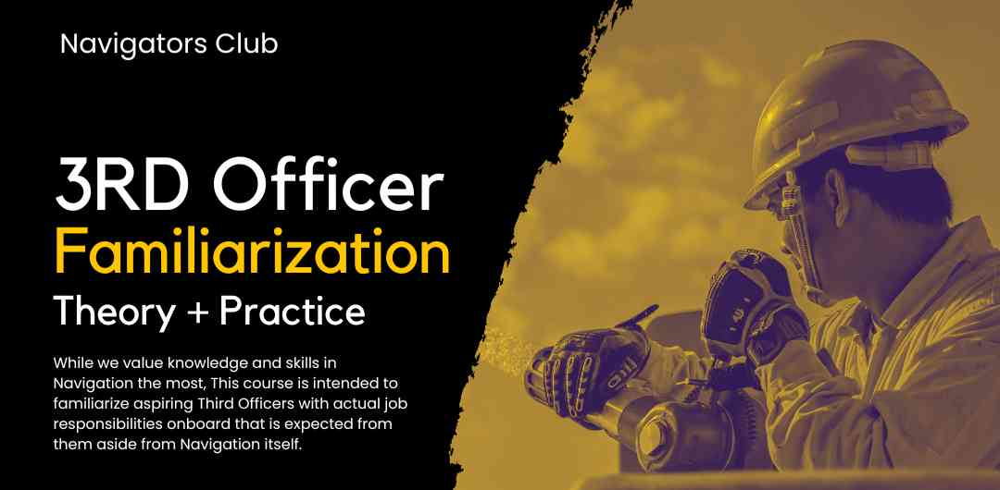

Third Officer
Job Familiarization
The whole role, start to finish: handover, safety equipment, drills and muster lists, port documents, requisitions, PSC inspections, month-end paperwork, and the computer tricks that save you hours.